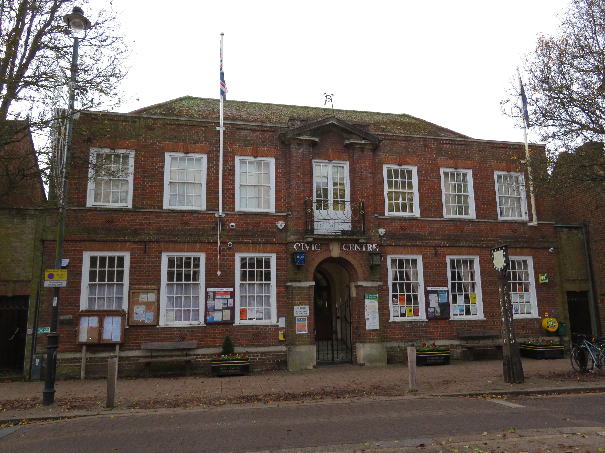

About Berkhamsted Film Society

The Civic Centre, Berkhamsted - our home since 1976
The Society was started in 1967 by a group of cine enthusiasts in the Berkhamsted area. It has been thriving ever since. The Society showed its first films on hired 16mm projectors to an opening membership of 127 at the Catholic Hall. The venue moved to the more comfortable surroundings of the Kings Arms Hall in 1969 and then to its present home at the Civic Centre in 1976.
The Society was presented the 1971 BFFS Film Society of the Year Award, the prize for which was a 16mm projector donated by the Rank Organisation. The surprise bonus was the loan for six-months of a video-cassette player, at that time a major breakthrough in technology.
In the early days there were no facilities to store loudspeakers and projectors at the venue and these had to be moved to and from Committee members' homes for every film night. Changing reels in the dark projection room was a tricky business, occasionally resulting in missed cues and coils of film all over the floor!
1996-97 was the Society's most popular year in terms of membership. All previous records were broken when 298 members signed up.
2002-3 saw a season of significant change as the distributors started to drop new films in 16mm format in favour of DVDs. In the face of declining availability, Berkhamsted Film Society made a decision to retire its 16mm projectors and opt for new digital technology and the new digital era kicked off in January 2003.
The society now has a state of the art HD digital projection system and Dolby surround sound. The projector is ceiling mounted and we project onto a large 16ft screen which produces high quality images.